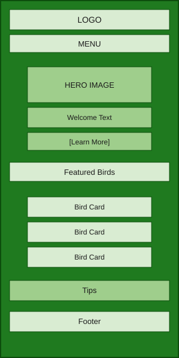
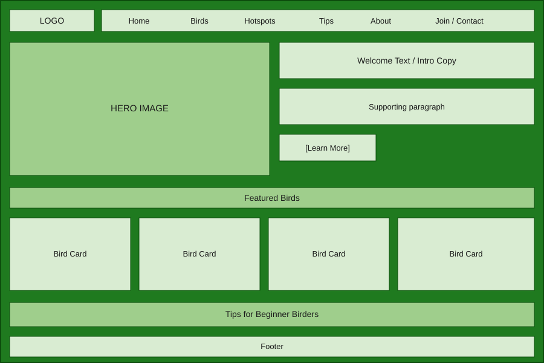

WDD 131 Project Site Plan
Author: Dira Luke
Course: Website Planning Document
Site Name
Wildlife & Bird Watching Guide
This name represents a website focused on helping people discover local birds and wildlife. It communicates the main purpose of the website and helps visitors understand that they can find information about bird species, habitats, conservation, and outdoor exploration.
Site Purpose
The purpose of this website is to provide an educational and interactive guide for bird watchers and wildlife enthusiasts. The website will provide information about local bird species, habitats, safety tips, bird-watching locations, equipment recommendations, and conservation resources.
Scenarios
The following questions represent information visitors may look for when using this website:
- What birds can I find in my area during different seasons?
- What equipment do I need to start bird watching?
- Where can I find safe places to observe local wildlife?
Color Scheme
The selected colors represent nature, outdoor exploration, and wildlife environments.
| Color | Hex Code | Usage |
|---|---|---|
| Forest Green | #2C5E3B | Header, navigation, buttons, and headings |
| Warm Sand | #D4A373 | Cards, secondary sections, and accents |
| Rust Orange | #E07A5F | Highlights, links, and important information |
| Cream | #F4F1DE | Main background color |
Typography
The fonts were selected to improve readability and create a professional outdoor theme.
- Montserrat: Used for headings, titles, and navigation menus.
- Roboto: Used for paragraphs, descriptions, and general website text.
Montserrat Example Heading
Roboto example text showing readability for website information.
Wireframes
These wireframes represent the homepage layout for mobile and desktop screen sizes.
Mobile View

Desktop View
